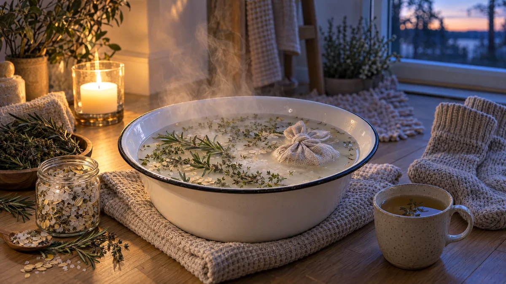

RESTFEST · HEMMASPA
Värmande fotbad med salt, rosmarin och timjan
Grovt salt, några kvistar rosmarin och timjan och en näve havregryn i en balja med varmt vatten. Örterna flyter i vattnet och doften fyller badrummet. En stunds lyx efter en lång dag på kalla novembergator.
- Förberedelse
- 15 min
- Verkningstid
- 15–20 min
- Räcker till
- 1 fotbad
- Nivå
- Nybörjare
 Det här behöver du
Det här behöver du
Tryck på + vid det du behöver köpa.
Gör så här
- Lägg rosmarin och timjan i en kastrull och häll över 1 liter kokande vatten. Låt örterna dra i 10 minuter, som ett starkt örtte.
- Häll havregrynen i tygpåsen eller strumpan och knyt ihop den.
- Häll örtvattnet med kvistarna i en stor balja. Fyll på med varmt vatten tills temperaturen är behaglig, ca 38–40 grader.
- Rör ner saltet tills det har löst sig och lägg i havrepåsen. Krama påsen några gånger så att vattnet blir mjölkigt och mjukt.
- Sätt ner fötterna och låt dem vila i 15–20 minuter. Fyll på med lite varmt vatten om det svalnar.
- Torka fötterna noga, särskilt mellan tårna. Smörj in dem med fotkräm eller lite olivolja och ta på varma sockor.
Presentation och användning
- Använd en vacker balja i emalj, trä eller zink och ställ den på en vikt handduk.
- Låt örtkvistarna flyta på ytan och lägg några extra kvistar på kanten av baljan.
- Ställ fram en kopp te, ett tänt ljus och en mjuk handduk inom räckhåll.
- Blanda salt, havregryn och torkade örter i en glasburk så har du en färdig fotbadsblandning till nästa gång, eller att ge bort.
Bra att veta
- Känn alltid på vattnet med handen eller armbågen innan du sätter ner fötterna.
- Har du diabetes, dålig cirkulation eller nedsatt känsel i fötterna, var extra försiktig med varmt vatten och fråga gärna vården först.
- Undvik fotbad med salt om du har sår eller sprickor på fötterna.